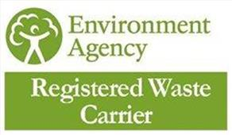
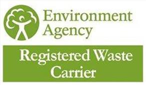

For the last 20 years Green Estate Landscaping has been one of Yorkshire's leading specialists in landscaping services. We offer a range of specialised services including designer meadow creation, commercial landscaping build and maintenance services, parks and public green space maintenance, and green roof installation maintenance.
Alongside this, we have extensive experience in educational grounds maintenance and Sustainable Urban Drainage Schemes (SuDS).
 
